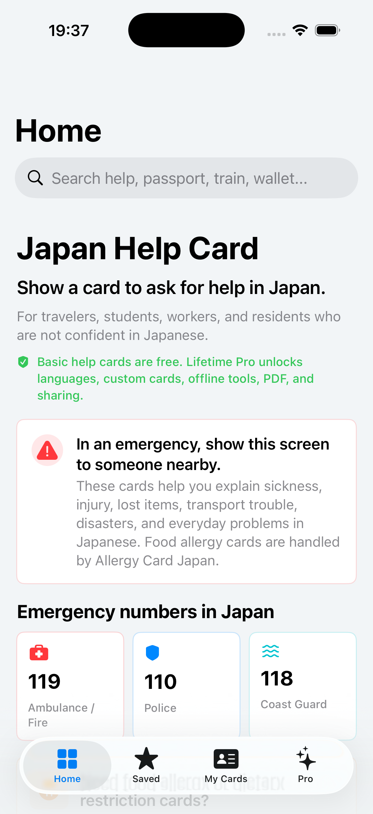
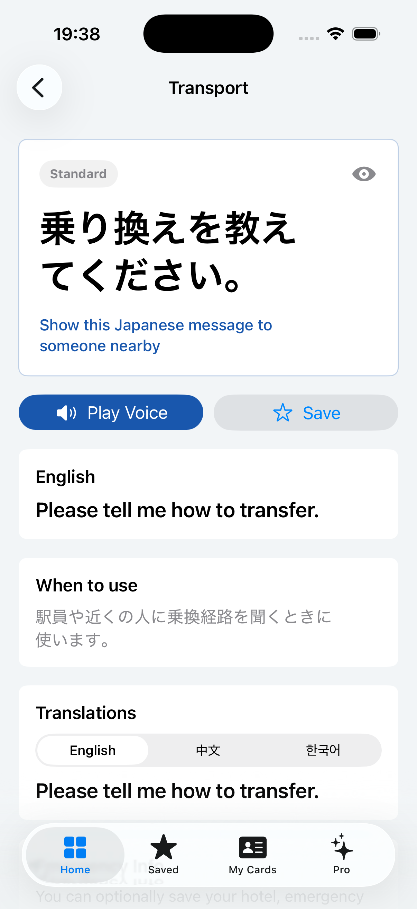
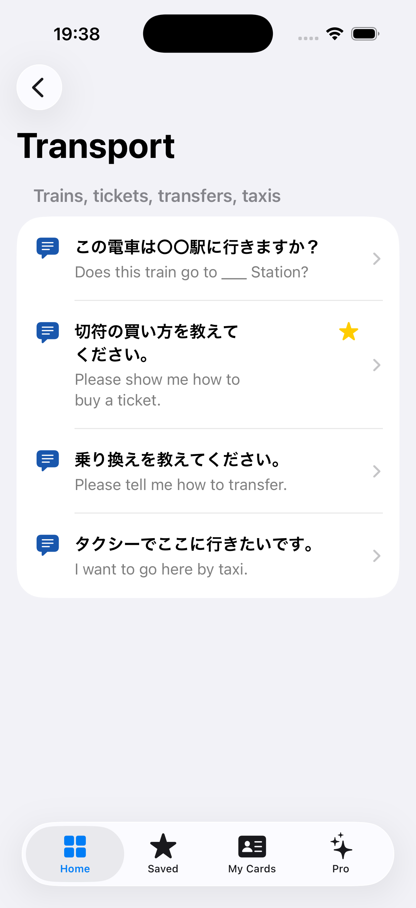

Medical and daily help
Cards for fever, stomach pain, ambulance requests, hospital search, restrooms, Wi-Fi, charging, and general help.
App Store Review Page
Japan Help Card helps foreign travelers, international students, workers, and residents communicate common non-food problems in Japanese without typing or speaking fluent Japanese.
Purpose
The app is a collection of simple cards users can show to people nearby. Each card displays a clear Japanese phrase with English context, and Pro users can view additional translations and use voice playback.
Cards for fever, stomach pain, ambulance requests, hospital search, restrooms, Wi-Fi, charging, and general help.
Cards for trains, taxis, lost wallet, lost passport, police station, hotel communication, disasters, and evacuation shelters.
The primary use case is showing a large Japanese phrase on screen to a station staff member, hotel staff member, pharmacist, police officer, or person nearby.
Current App Features
Allergy Card Japan
Japan Help Card focuses on non-food situations: medical symptoms, transportation, lost items, disasters, hotels, shopping, and daily trouble. If a user searches for allergy or dietary restriction keywords, the app recommends Allergy Card Japan instead of duplicating that app's purpose.
In-App Purchase
Pro is implemented as a non-consumable in-app purchase. The app does not offer a subscription plan.
Product Type
Non-consumable
Product ID
com.mm.japanhelpcard.pro.unlock
Displayed Price
$4.99 fallback, App Store localized price when available
Restore
Available from the Pro screen with the same Apple ID
Screenshots
Place production screenshots in docs/assets/ using the file names below before publishing the GitHub Pages site.




Privacy and Safety
The app does not require account registration. Optional personal information, such as hotel name, emergency contact, medical notes, medicines, passport memo, and custom cards, is stored locally on the user's device.
Users can open and use the core card experience without creating an account, logging in, or connecting to a backend account system.
Custom cards and emergency profile notes are optional. Users can leave sensitive fields blank and can delete emergency information in the app.
The app helps communication only. It does not provide medical diagnosis, legal advice, disaster instructions, or emergency service advice.
Review Notes
No demo account is required. Free features are available immediately after launch. Pro features can be tested through StoreKit or an App Store sandbox purchase.
Core help-card content is bundled with the app. StoreKit is used for purchase and restore. The Allergy Card Japan recommendation opens the App Store link only when the user chooses it.
Japan Help Card is a communication aid. Users should contact local emergency services directly in dangerous or urgent situations.
The app does not require user registration. Optional notes are saved on device. No server-side account, chat, or community feature is included in this build.
The app intentionally avoids food allergy and dietary restriction cards to avoid overlap with Allergy Card Japan. It focuses on non-food assistance in Japan.
Please use the App Store Connect review contact information for direct reviewer questions.